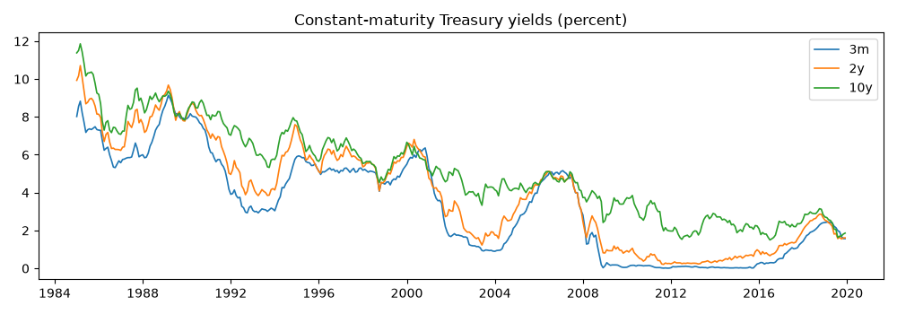
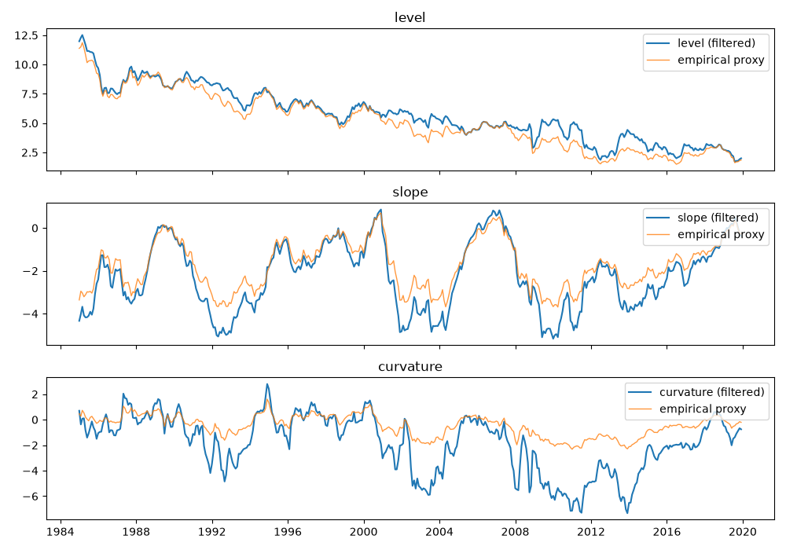
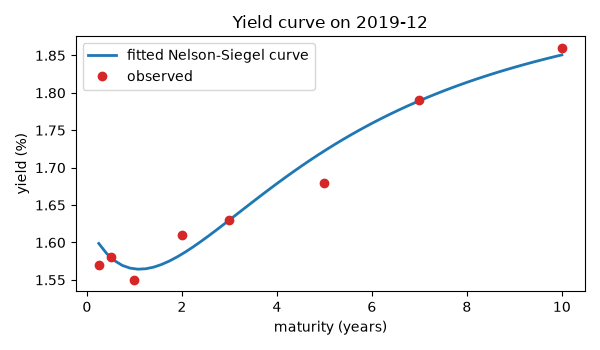

Note
Go to the end to download the full example code.
Forecasting the Treasury yield curve with dynamic Nelson-Siegel#
Diebold and Li (2006) showed that three factors – level, slope and curvature – loaded through the Nelson-Siegel functions fit the cross section of Treasury yields almost perfectly, and that forecasting the factors with simple autoregressions beats a random walk at horizons of six months and beyond. Diebold, Rudebusch and Aruoba (2006) put the same model in state-space form and estimated it in one step by maximum likelihood.
This example does both on constant-maturity Treasury yields: the one-step estimate for the full sample, with its factor dynamics and measurement noise, and the two-step estimator inside a recursive out-of-sample exercise against a random walk and an unrestricted VAR, with Diebold-Mariano tests at each horizon.
Data#
Monthly averages of the constant-maturity yields at eight maturities, three months to ten years, 1985-2019. The Nelson-Siegel decay is quoted per year, so maturities are in years.
import matplotlib.pyplot as plt
import numpy as np
from cultivars.forecast.backtest import Backtest
from cultivars.forecast.comparison import ForecastComparison
from cultivars.multivariate.reduced_form.functional import FunctionalVAR
from cultivars.multivariate.reduced_form.term_structure import DynamicNelsonSiegel
from cultivars.multivariate.reduced_form.vector_autoregression import VAR
from _fred import fetch
series = {
"3m": "GS3M",
"6m": "GS6M",
"1y": "GS1",
"2y": "GS2",
"3y": "GS3",
"5y": "GS5",
"7y": "GS7",
"10y": "GS10",
}
maturities = np.array([0.25, 0.5, 1.0, 2.0, 3.0, 5.0, 7.0, 10.0])
yields = fetch(series, start="1985-01-01", end="2019-12-01")
panel = yields.to_numpy()
print(yields.describe().round(2))
fig, ax = plt.subplots(figsize=(10, 3.5))
for name in ("3m", "2y", "10y"):
ax.plot(yields.index, yields[name], lw=1.2, label=name)
ax.set_title("Constant-maturity Treasury yields (percent)")
ax.legend()
fig.tight_layout()

3m 6m 1y 2y 3y 5y 7y 10y
count 420.00 420.00 420.00 420.00 420.00 420.00 420.00 420.00
mean 3.38 3.54 3.68 4.01 4.23 4.61 4.90 5.12
std 2.62 2.67 2.70 2.74 2.70 2.57 2.49 2.38
min 0.01 0.04 0.10 0.21 0.33 0.62 0.98 1.50
25% 0.91 1.00 1.16 1.34 1.55 2.22 2.70 2.92
50% 3.29 3.46 3.60 4.10 4.40 4.61 4.76 4.82
75% 5.35 5.54 5.76 6.14 6.27 6.58 6.72 6.88
max 9.14 9.45 9.86 10.71 11.05 11.52 11.82 11.86
One-step maximum likelihood#
The state-space estimate treats the factors as latent and estimates their autoregressions, innovation covariance and per-maturity measurement noise jointly through the Kalman filter. The decay is held at Diebold and Li’s value, 0.0609 per month, which puts the curvature loading’s peak at thirty months; estimating it adds a parameter the likelihood is nearly flat in and multiplies the running time, so fixing it is the conventional choice.
decay = 0.0609 * 12.0
dns = DynamicNelsonSiegel(panel, maturities, decay=decay).fit()
print(dns.summary())
Dynamic Nelson-Siegel Results
================================================================================
Dates: 420 Log-likelihood: 2855.951
Maturities: 8 AIC: -5671.903
Parameters: 20 BIC: -5591.098
--------------------------------------------------------------------------------
factor mean persistence innovation sd
level 6.0250 0.9980 0.2666
slope -3.3543 0.9888 0.3013
curvature -1.7479 0.9656 0.5775
================================================================================
Loading decay lambda = 0.7308 (held fixed); the curvature loading peaks near
maturity 2.45.
Estimated in one step by exact maximum likelihood through the Kalman filter; the
Diebold-Li two-step estimator is the warm start, not the answer.
Measurement noise is per-maturity, so noisy points on the curve are down-
weighted rather than contaminating the factors; missing entries are handled
element-wise.
Factors and their interpretation#
The level factor tracks the long end, the slope factor the negative of the ten-year minus three-month spread, and the curvature factor the middle of the curve. Overlaying the empirical proxies Diebold and Li propose is the standard sanity check.
proxies = {
"level": yields["10y"],
"slope": yields["3m"] - yields["10y"],
"curvature": 2.0 * yields["2y"] - yields["3m"] - yields["10y"],
}
factors = {"level": dns.level, "slope": dns.slope, "curvature": dns.curvature}
fig, axes = plt.subplots(3, 1, figsize=(10, 7), sharex=True)
for ax, (name, factor) in zip(axes, factors.items(), strict=True):
ax.plot(yields.index, factor, color="C0", lw=1.5, label=f"{name} (filtered)")
ax.plot(yields.index, proxies[name], color="C1", lw=1.0, alpha=0.8, label="empirical proxy")
ax.legend(loc="upper right")
ax.set_title(name)
fig.tight_layout()

Fit in the cross section#
Measurement standard deviations by maturity show where three factors fall short. The fitted curve at the last date is drawn against the observed yields.
print("Measurement standard deviation by maturity (percentage points)")
for name, sd in zip(series, np.sqrt(dns.measurement_var), strict=True):
print(f" {name:>3s} {sd:.3f}")
grid = np.linspace(0.25, 10.0, 60)
last = len(yields) - 1
fig, ax = plt.subplots(figsize=(6, 3.5))
ax.plot(grid, dns.curve(last, grid), lw=2, label="fitted Nelson-Siegel curve")
ax.plot(maturities, panel[last], "o", color="C3", label="observed")
ax.set_xlabel("maturity (years)")
ax.set_ylabel("yield (%)")
ax.set_title(f"Yield curve on {yields.index[last]:%Y-%m}")
ax.legend()
fig.tight_layout()

Measurement standard deviation by maturity (percentage points)
3m 0.145
6m 0.002
1y 0.081
2y 0.072
3y 0.002
5y 0.059
7y 0.008
10y 0.102
Recursive forecasting exercise#
The two-step estimator – cross-sectional least squares for the factors at the fixed decay, then a VAR(1) on the factors – is cheap enough to re-estimate at every origin. The exercise starts from a nine-year window and forecasts one, six and twelve months ahead at every origin from 1994 onward. The random walk is the benchmark that yield-curve models must beat; the unrestricted VAR(1) on the eight yields is the overparametrized alternative.
class RandomWalk:
"""No-change forecaster for a (nobs, k) panel."""
def __init__(self, window: np.ndarray) -> None:
"""Keep the last observation of the window."""
self.last = np.asarray(window)[-1]
def forecast(self, steps: int) -> np.ndarray:
"""Repeat the last observation ``steps`` times."""
return np.tile(self.last, (steps, 1))
def fit_dns(window: np.ndarray) -> FunctionalVAR:
"""Two-step dynamic Nelson-Siegel on a yield window."""
return FunctionalVAR(window, grid=maturities, order=1, basis="nelson-siegel", decay=decay).fit()
horizons = 12
start = 12 * 9
names = tuple(series)
records = {
"DNS": Backtest(
panel,
fit_dns,
horizons=horizons,
start=start,
predict=lambda result, steps, _seed: result.forecast_curves(steps),
names=names,
).run(),
"VAR(1)": Backtest(
panel, lambda w: VAR(w, order=1).fit(), horizons=horizons, start=start, names=names
).run(),
"RW": Backtest(panel, RandomWalk, horizons=horizons, start=start, names=names).run(),
}
print(f"{records['DNS'].n_origins} forecast origins")
301 forecast origins
Root mean squared errors relative to the random walk#
Ratios below one favour the model. The Diebold-Li pattern is: nothing beats the random walk at one month; the Nelson-Siegel forecasts pull ahead at six and twelve months, most clearly at the short end; the unrestricted VAR is worse than both.
h = 1 3m 6m 1y 2y 3y 5y 7y 10y
DNS 0.99 0.93 1.01 1.02 1.05 1.07 1.03 1.05
VAR(1) 0.93 0.96 0.99 1.02 1.03 1.02 1.02 1.03
h = 6 3m 6m 1y 2y 3y 5y 7y 10y
DNS 0.94 0.95 1.02 1.07 1.09 1.10 1.08 1.09
VAR(1) 0.93 0.98 1.04 1.08 1.09 1.10 1.10 1.11
h = 12 3m 6m 1y 2y 3y 5y 7y 10y
DNS 0.96 0.98 1.04 1.10 1.14 1.17 1.16 1.18
VAR(1) 0.93 0.96 1.02 1.09 1.13 1.16 1.18 1.21
Diebold-Mariano tests#
The ratios say which forecaster was more accurate in this sample; the test says whether the difference is distinguishable from noise once the overlap of multi-step errors is accounted for. The comparison uses squared-error loss on the two-year yield; a negative mean differential favours the first forecaster, the DNS.
for h in (1, 6, 12):
dns_loss = records["DNS"].losses("squared", horizon=h, name="2y")
rw_loss = records["RW"].losses("squared", horizon=h, name="2y")
test = ForecastComparison(dns_loss, rw_loss).compute(horizon=h)
print(
f"h = {h:2d} mean loss differential {test.mean_differential:8.4f} "
f"DM {test.dm_statistic:6.2f} (p = {test.dm_pvalue:.3f}) "
f"HLN-adjusted {test.hln_statistic:6.2f} (p = {test.hln_pvalue:.3f})"
)
h = 1 mean loss differential 0.0021 DM 1.50 (p = 0.134) HLN-adjusted 1.49 (p = 0.136)
h = 6 mean loss differential 0.0741 DM 1.13 (p = 0.259) HLN-adjusted 1.11 (p = 0.269)
h = 12 mean loss differential 0.2518 DM 1.28 (p = 0.201) HLN-adjusted 1.23 (p = 0.220)
What to take away#
The gain from the factor structure is in parsimony, not in fit: the
VAR(1) on eight yields fits the sample better and forecasts it worse.
The one-step estimate is the model to report, since its measurement
noise and factor dynamics are estimated consistently; the two-step
estimate is the one to backtest, since it costs nothing per origin.
Whether the 2009-2015 zero-lower-bound years, with the short end
pinned, flatter the random walk at short maturities is worth checking
by re-running the exercise with end="2008-12-01".
Total running time of the script: (1 minutes 20.598 seconds)